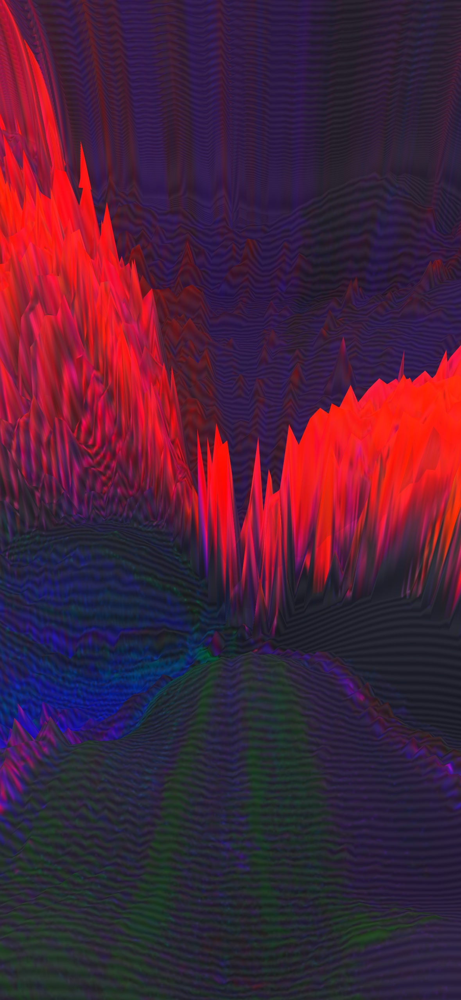
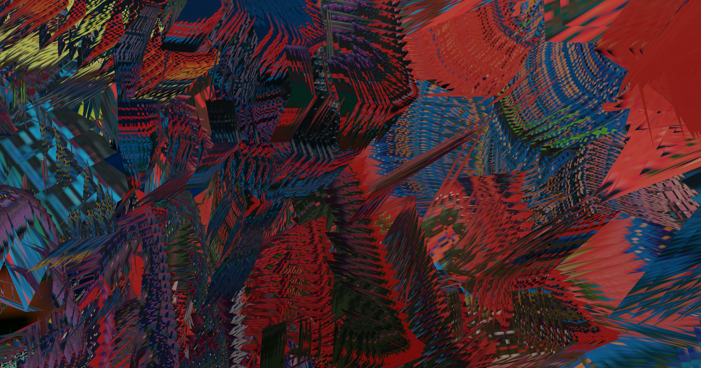
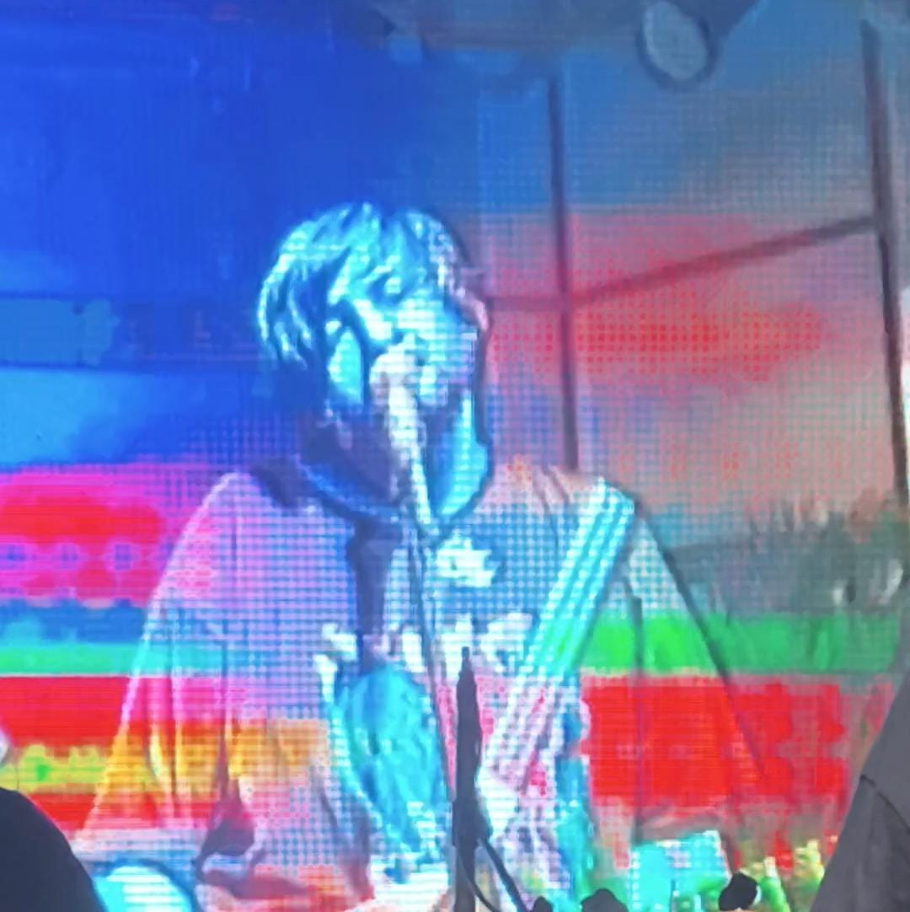

{{ w.title }}
{{ p }}
Senior product engineer and new-media artist. I build platforms, live systems and the occasional strange machine.
I enjoy the loop: make something, pull it apart, learn what it is doing, then build the next version from the useful pieces.
The materials change between product engineering and new-media work. The process does not.

{{ p }}

A new media art practice by Rhea Fabian and me, exploring art, technology and the human condition.
Visit Television Dust ↗{{ p }}
I co-founded Meld and led web development across the studio's identity and digital work. It was a very frontend-focused role. Designers are hard to please, so the job was often about turning an ambitious visual system into a responsive, usable website without flattening what made it distinct.
I worked with WordPress and Shopify a lot, alongside good old HTML, CSS and JavaScript. More custom builds brought in Three.js, p5.js, GSAP and, occasionally, Astro. Many of the interfaces I am proudest of came from that work, and I still consult with the team.
Visit Meld ↗Sketches, side projects and websites I made because somebody needed one, or because I wanted to see if an idea would work.
{{ s.desc }}
Frontman, guitarist, songwriter. No Act, our debut, came out in 2014 and is on all platforms. The live set at Omnivoid is up in full.

I work mostly with TypeScript, Python, Go, React, PostgreSQL and AWS. The live systems tend to involve C++, openFrameworks, OPENRNDR, Unity, GLSL shaders, ESP32s, sensors, OSC and display hardware.
If you want dates, job history and the full list of tools, they are all in my CV. On this page, I stuck to the work I actually wanted to talk about.